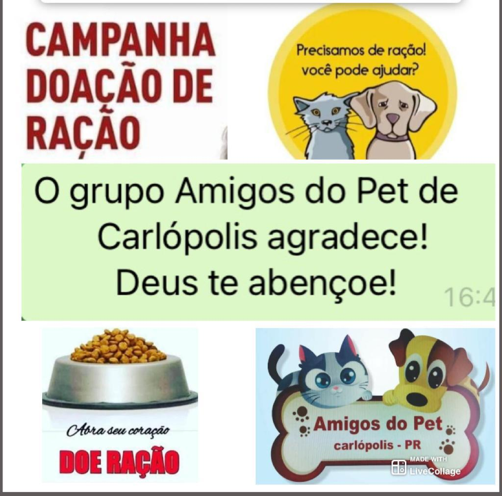

Um grupo de voluntários participam de várias ações para protegerem os Pets, cães e gatos em situação de rua, risco ou abandono, da cidade de Carlópolis.
Você também pode participar de uma das ações e ser um protetor/protetora ajudando doando ração para cães e gatos.
Qualquer quantia de ração que puder doar já irá ajudar a alimentar os Pets.
Os pontos de coletas são:
- Colégio Estadual Carolina Lupion, rua Jorge Barros nº 1095.
- Brechó Amigos do Pet, rua Jorge Barros nº 1311.
